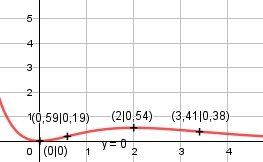

Aufgabe 143 f(x) = x2 * e-x Produktregel erste Ableitung: u = x2, u' = 2x v = e-x Kettenregel: v' = -e-x f'(x) = 2x * e-x + (- e-x) * x2 f'(x) = e-x * (2x - x2) Produktregel zweite Ableitung: u = e-x Kettenregel: u' = - e-x v = 2x - x2, v' = 2 - 2x f''(x) = - e-x * (2x - x2) + (2 - 2x) * e-x f''(x) = e-x * (-2x + x2 + 2 - 2x) x2 - 4x + 2 f''(x) = e-x * (x2 - 4x + 2) = -------------- ex Zur Beurteilung, ob f'''(x) ≠ 0: (Begründung siehe Aufgabe 105) u = x2 - 4x + 2, u' = 2x - 4 u' 2x - 4 f'''(x) = --- = --------- ≠ 0 für alle x ≠ 2 v ex Definitionsbereich: -∞ < x < ∞ Waagerechte Asymptote: x2 f(x) = x2 * e-x = ----- geht gegen 0 für x --> ∞ ex Wertebereich: f(x) wird dann am kleinsten, wenn x = 0 (Extrempunkt) f(0) = 0 --> 0 ≤ f(x) < ∞ Symmetrie zur y-Achse bzw. zum Punkt (0|0): f(-x) = (-x)2 * e-(-x) = x2 * ex ≠ f(x) --> keine Achsensymmetrie -f(-x) = -x2 * ex ≠ f(x) --> keine Punktsymmetrie Nullstellen: f(x) = 0 x2 * e-x = 0 |:e-x x2 = 0 |ⱱ x1,2 = 0 N(0|0) (Berührpunkt) Schnittpunkt mit der y-Achse: x = 0 f(0) = 02 * e-0 = 0 Sy(0|0) Extrempunkte: f'(x) = 0 e-x * (2x - x2) = 0 |:e-x x * (2 - x) = 0 x1 = 0, f(0) = 0 2 - x = 0 |+x x2 = 2, f(2) = 22 * e-2 = 0,54 f''(0) = e-0 * (02 - 4 * 0 + 2) > 0 --> Tiefpunkt (0|0) f''(2) = e-2 * (22 - 4 * 2 + 2) < 0 --> Hochpunkt (2|0,54) Wendepunkte: f''(x) = 0 e-x * (x2 - 4x + 2) = 0 |:e-x x2 - 4x + 2 = 0 p, q - Formel p = -4, q = 2 x1,2 = x1,2 = 2 ± x1,2 = 2 ± x1,2 = 2 ± 1,41 x1 = 3,41, f(3,41) = 3,412 * e-3,41 = 0,38 --> WP(3,41|0,38) x2 = 0,59, f(0,59) = 0,592 * e-0,59 = 0,19 --> WP(0,59|0,19) Graph:
